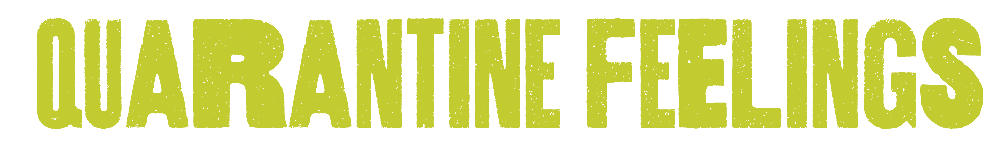

this year has been a whole hell of a lot of mixed feelings.
as time has gone on, all concepts of reality have started to dissipate
i watch shows and get upset when people aren't wearing masks in the shows
like i know it's just a show, but somehow this year has been so traumatic
that small things like this are so far from our current reality that i get upset
as time keeps moving forward and things only seem to get worse, i'm plagued
with the idea that the pandemic will end and my youth will be over
this is probably untrue and i can rationally think through things
but as much as i am taking everything seriously, i want normality so much
if there is even a turning back to the before
on the flipside, this year has allowed me so many freedoms i never could have imagined
i didn't work this summer, i spent so much time outside and finally receiving
the break i've been asking for since i was 15
i feel privileged and lucky for my health
somedays i've felt invincible, on top of the world and overwhelming amounts of joy
despite some of the lowest lows, i've coped surprisingly well
finally utilizing all of the coping mechanisms i learned in therapy 8 years ago
i've found passion and joy out of new hobbies
i've realized the importance of human connection and after years of trying to escape
i've realized that maybe i actually want to stay
but yeah, i guess this has all been a big learning experience
and i'm lucky to have that perspective
it shows how extremely priviliged i am
that despite the abundance of trauma this year
i know i am ok and that i have been able to find silver linings
many haven't been afforded that perspective
but even so, i hope this pandemic ends
i hope i don't lose anymore friends, to mental health or covid
i just want to feel kind of normal again.